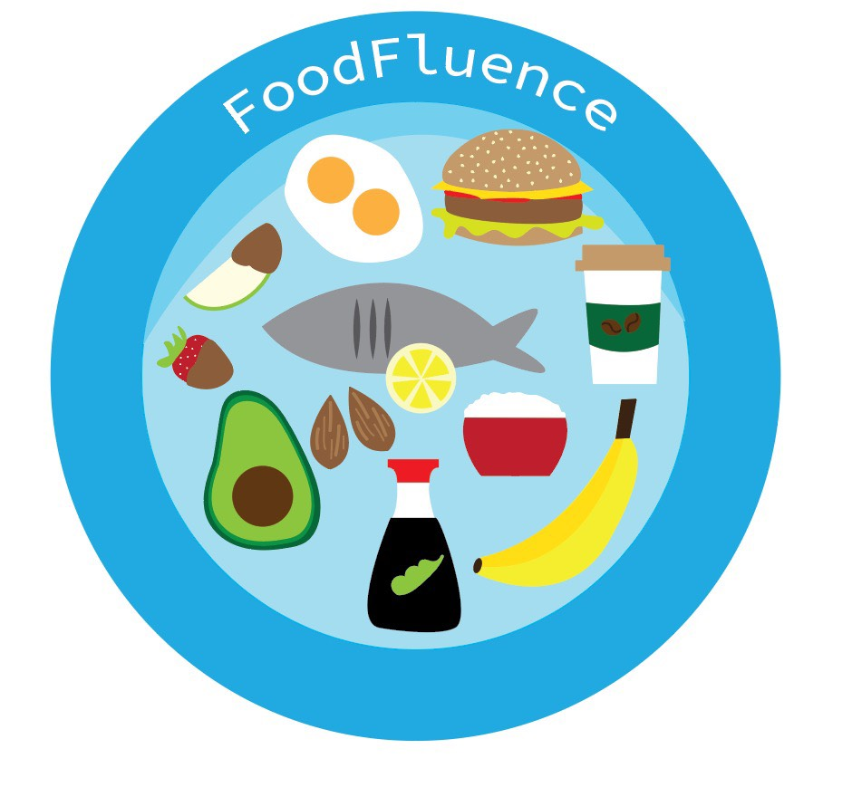
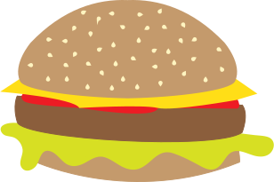
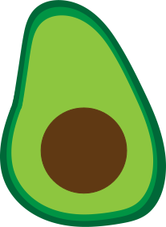

FoodFluence
Know Your Impact
FoodFluence
We're creating a web application to help people understand the impact of their food choices in a meaningful way. Our web application will allow users to choose from a list of foods provided and learn about the food, its environmental impact, and how can users can make alternative choices to decrease their impact. The goal of this web application is to encourage users to make more environmentally conscious food choices by presenting alternatives to their choices.
User Experience
Food Story
From the opening screen, users will select a food from a list of options. Upon selection of a food users wish to learn about a new screen will open with information about a food. This section is general information about the food which may include general use, popularity, ingredients, and other fun facts.
What is the Impact?
After learning about the food selected, users will continue the food story and learn about various environmental impacts that are associated with the food. This may include the amount of water it takes to produce the product or how biodiversity in various ecosystems is impacted.
Specific example
After learning about the general impact the selected food has, users will be informed of a direct impact the food has had on a specific ecosystem, species, or community. This helps users see a direct and meaningful impact the food has.
Call to Action
After learning about the selected food and its impact, users will have a clear call to action based on the food they selected. This may include giving suggestions to users about how to lessen their impact or by showing alternatives products the users can purchase, as well as similar products to avoid.
Why Use FoodFluence
Food Awareness

Who should use FoodFluence?
Anyone and everyone!
FoodFluence is meant to be a source of information for anyone who is curious about the environmental impact of food Our goal is for a user to leave our web application with enough information to make a change during their next grocery shopping trip.
It is not always clear what it means to buy strawberries instead of raspberries, or soy milk instead of almond milk. We hope to demystify these questions with FoodFluence and empower users to learn more about the impact of their food choices.
Research

We found that there are a large sum of people who do not know the environmental impact of the food they eat.
Many of our users did not know of ways they can lessen those environmental impacts without making changes to their dietary choices.
For our users, many assumed the only way they could lessen their impact was to change to a vegetarian or vegan diet.
For many of our users, completely changing their diet was unappealing or unsustainable.
For some of our users, changing to a vegetarian or vegan diet would be difficult financially or be more inconvenent to them.
FoodFluence decided to focus on a per food/product basis because our users said they felt more empowered to modify their food choices as opposed to completely changing their diets.
Additionally, because FoodFluence shows alternative products users can buy, users felt like they could make changes right away since it did not require additional research.
Our Team
We are all students in the Informatics program at the University of Washington.
Michelle is a 5th year senior at the University of Washington. For this project, Michelle was the lead UX Designer.
Casey is a 3rd year senior at the University of Washington. For this project, Casey was a develop and researcher.
Nick is a 5th year senior at the University of Washington. For this project, Nick was the lead Developer.
Peyton is a 5th year senior at the University of Washington. For this project, Peyton was the lead researcher.
Contact Us
If you're interested in learning more about our project, please email Casey at caseylum@uw.edu. We're interested in getting in contact with environmental and/or food organizations.